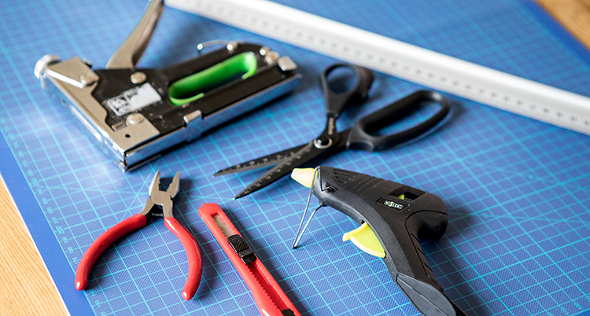

 Att hålla på med verktyg som en tång eller skruvmejsel kan göra att du blir bättre på att lära dig språk. Det har forskare undersökt. Forskare i Frankrike har undersökt hur hjärnan jobbar. De har sett att samma delar av hjärnan jobbar när vi försöker förstå ett språk och när vi jobbar med verktyg med händerna. Om vi använder en tång eller skruvmejsel i en halvtimme kan det göra att vi blir bättre på att läsa. Och om vi läser en text i en halvtimme kan det också göra att vi blir bättre på att jobba med ett verktyg med händerna. Till exempel en tång eller en skruvmejsel. Det här kan hjälpa unga personer som har problem att lära sig tala och förstå ett språk. Det säger forskarna. Forskarnas upptäckt kan göra att det kommer nya sätt att lära sig språk.